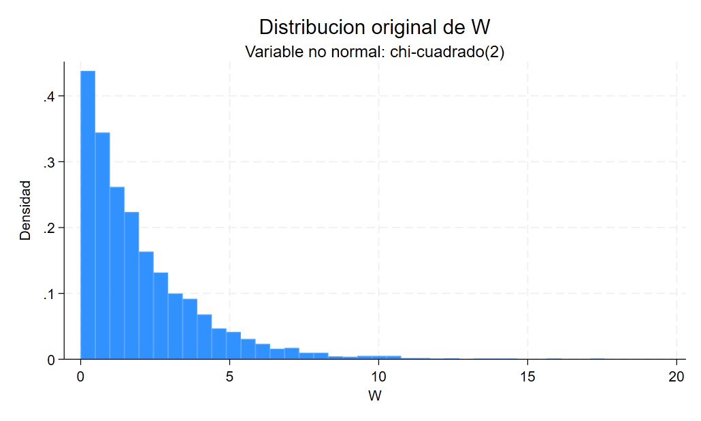
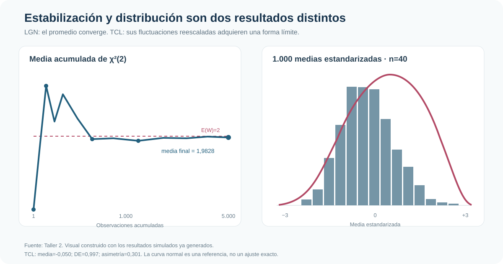
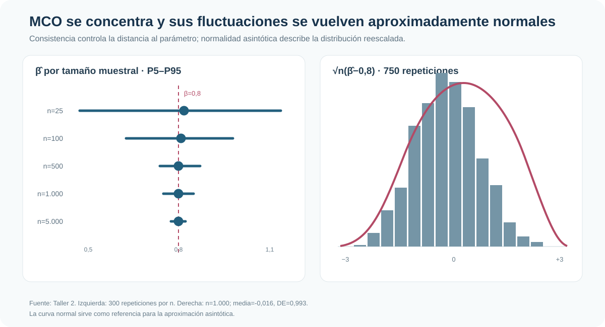

De promedios a estimadores: por qué las muestras grandes sostienen la inferencia
LGN, TCL, consistencia, normalidad asintótica y errores robustos mediante simulación
Las muestras grandes estabilizan estimadores y aproximaciones distributivas; no corrigen una fórmula de varianza equivocada.
Cinco resultados clásicos forman una sola cadena: la LGN estabiliza momentos muestrales, el TCL describe sus fluctuaciones, ambas propiedades sostienen consistencia y normalidad asintótica de MCO, y la matriz de varianzas correcta convierte esa aproximación en inferencia válida.
LGN
1,983 → 2
Media acumulada final de una χ²(2), con N=5.000
TCL
DE = 0,997
1.000 medias estandarizadas de muestras con n=40
Consistencia MCO
DE: 0,226 → 0,015
Al pasar de n=25 a n=5.000; β verdadero=0,8
Heterocedasticidad
EE: 0,046 → 0,065
Mismo coeficiente; incertidumbre robusta mayor
Una tesis, dos dimensiones de la simulación
La econometría observa una sola muestra; la simulación permite ver la distribución que existiría detrás de ella. El tamaño muestral n determina cuánto varía un estadístico dentro del experimento. Las repeticiones no mejoran el estimador de una muestra: permiten reconstruir su distribución muestral.
El ejercicio usa procesos deliberadamente simples y parámetros conocidos. Así puede comprobarse si una media converge a 2, si una pendiente converge a 0,8 y si los errores estándar reflejan la variabilidad que realmente se introdujo.
De la LGN al TCL
La Ley de los Grandes Números explica por qué los promedios muestrales se estabilizan. Una variable χ²(2) es positiva y muy asimétrica, pero tiene esperanza conocida igual a 2. En una trayectoria de 5.000 observaciones, la media acumulada termina en 1,9828.

El Teorema Central del Límite responde una pregunta distinta: no dónde termina la media, sino cómo fluctúa alrededor de su esperanza. Con 1.000 muestras de tamaño 40, el estadístico estandarizado tiene media -0,050, desviación 0,997 y una forma aproximadamente normal, aunque los datos originales no lo sean.

La aproximación no es una igualdad exacta: la asimetría residual de las medias es 0,301. El tamaño de cada muestra gobierna la calidad de la aproximación; las 1.000 repeticiones solo permiten verla con mayor claridad.
De promedios a MCO
MCO también es una función de momentos muestrales. Bajo exogeneidad y variación suficiente del regresor, la LGN lleva esos momentos hacia sus contrapartes poblacionales y la pendiente se concentra alrededor del parámetro verdadero.
En 300 repeticiones por tamaño muestral, la media de β̂ permanece cerca de 0,8 y su dispersión cae con n. El intervalo P5–P95 pasa de [0,471; 1,197] con n=25 a [0,775; 0,824] con n=5.000. Consistencia no significa convergencia monótona en una trayectoria: significa concentración probabilística de la distribución del estimador.
Normalidad asintótica e inferencia
La normalidad asintótica describe las fluctuaciones de orden √n. En 750 muestras de tamaño 1.000, √n(β̂−0,8) tiene media -0,016, desviación 0,993, asimetría -0,016 y curtosis 2,715. Bajo este diseño particular, la varianza límite es cercana a uno.

La consistencia permite que el estimador se acerque al parámetro. La normalidad asintótica permite construir aproximaciones para errores estándar, intervalos y tests. Son propiedades relacionadas, pero no intercambiables.
Concentración de β̂
| n | Media de β̂ | Desviación estándar | P5 | P95 |
|---|---|---|---|---|
| 25 | 0,8157 | 0,2258 | 0,4713 | 1,1970 |
| 100 | 0,8058 | 0,1111 | 0,6332 | 0,9857 |
| 500 | 0,8002 | 0,0412 | 0,7358 | 0,8695 |
| 1.000 | 0,7998 | 0,0303 | 0,7464 | 0,8470 |
| 5.000 | 0,8001 | 0,0147 | 0,7748 | 0,8236 |
Heterocedasticidad: el límite de “más datos”
Se simula y=1+0,8x+u con media condicional cero, pero con una dispersión del error que crece con |x|. MCO estima 0,7969, cerca del parámetro verdadero. La heterocedasticidad no altera el coeficiente calculado ni su consistencia bajo este diseño; sí invalida la fórmula homocedástica de varianza.
| Resultado | MCO clásico | MCO robusto |
|---|---|---|
| Coeficiente de x | 0,7969 | 0,7969 |
| Error estándar | 0,0460 | 0,0650 |
| IC95% aproximado | [0,707; 0,887] | [0,670; 0,924] |
| N | 1.000 | 1.000 |
Breusch–Pagan rechaza homocedasticidad (p=0,0042) y White lo hace con mayor claridad (p<0,001). El error robusto es 41% mayor que el clásico. Aumentar n puede hacer más precisa la aproximación asintótica, pero no transforma una matriz de varianzas mal especificada en una correcta.
Conclusión
La LGN explica estabilización; el TCL, fluctuaciones; ambas sostienen consistencia y normalidad asintótica de MCO. Esa cadena justifica gran parte de la estimación y la inferencia habitual, pero solo bajo las condiciones relevantes del proceso generador.
La lección operativa es doble: una muestra grande mejora la concentración y la aproximación distributiva, pero no reemplaza el diagnóstico del modelo. Cuando la varianza condicional está mal especificada, la inferencia convencional puede seguir siendo incorrecta incluso con muchos datos; la robustez debe incorporarse en la matriz de varianzas, no esperarse como un premio automático por aumentar la muestra.